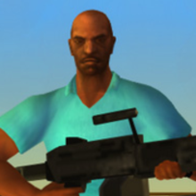

As conexões da franquia GTA Wiki
A franquia Grand Theft Auto sendo uma franquia muito grande, exstem diversas conexões de personagens. O que vamos abordar serão as ligações das franquia 3d do game sendo assim começando pela sua franquia cronológica entre os personagens e seus protagonistas.
Apresentando seus personagens e sua historia:

Victor Vance - é o primeiro a aparacer da franquia cronológica da era 3D, do jogo (Grand Theft Auto Vice City Stories) com o jogo se passando em (1984) junto com o seu irmão, Lance Vance.